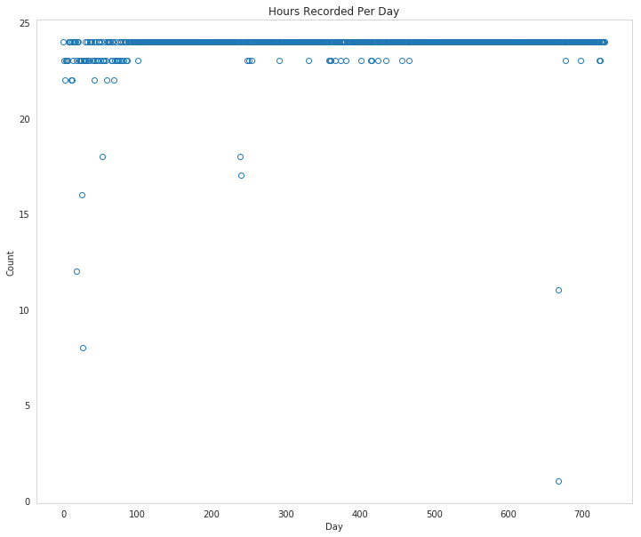
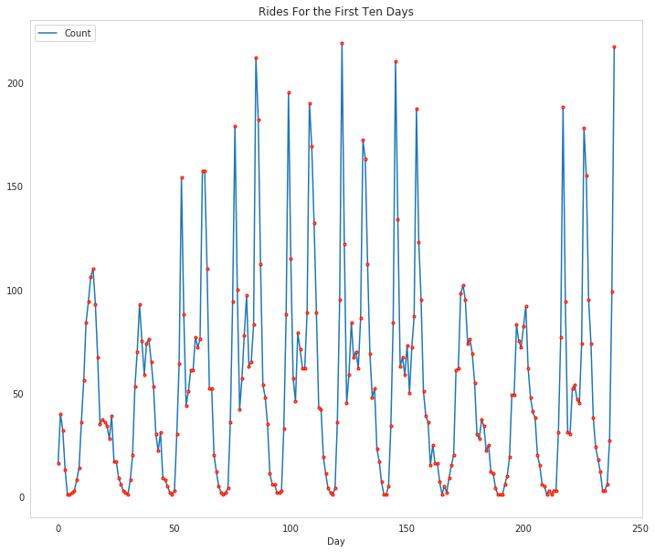
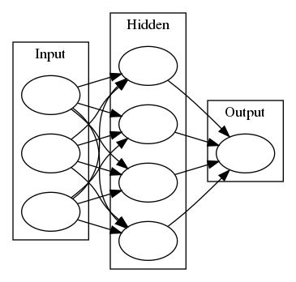
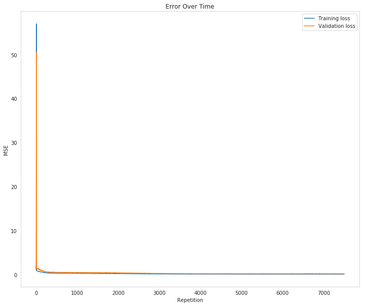
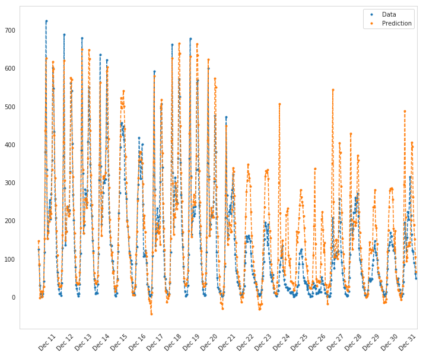
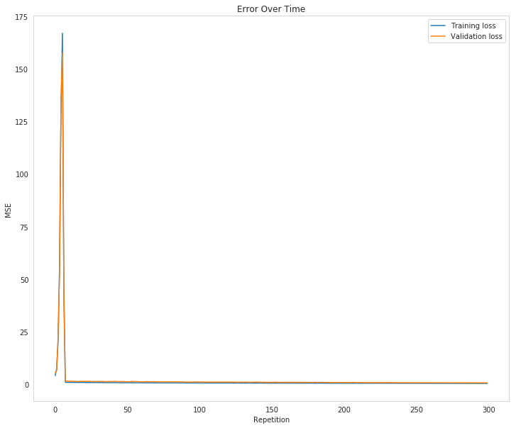
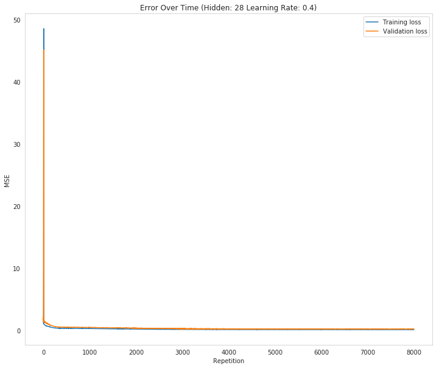
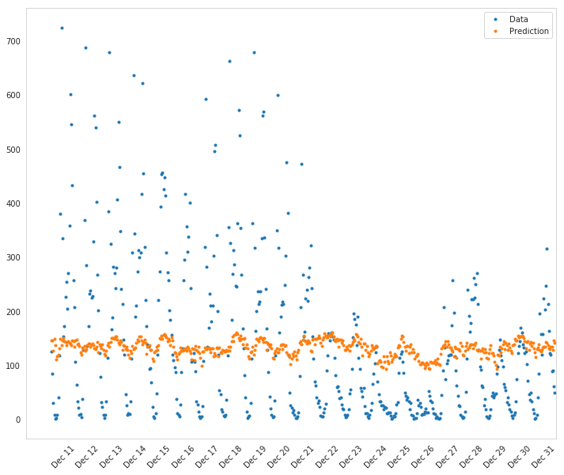
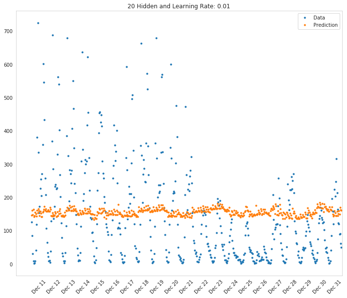

The Bike Sharing Project
Table of Contents
Introduction
This project builds a neural network and uses it to predict daily bike rental ridership.
Jupyter Setup
This sets some "magic" jupyter values.
Display Matplotlib plots.
get_ipython().run_line_magic('matplotlib', 'inline')
Reload code from other modules that has changed (otherwise even if you re-run the import the changes won't get picked up).
get_ipython().run_line_magic('load_ext', 'autoreload')
get_ipython().run_line_magic('autoreload', '2')
I couldn't find any documentation on this other than people asking how to get it to work. I think it means to use a higher resolution if your display supports it.
# get_ipython().run_line_magic('config', "InlineBackend.figure_format = 'retina'")
Imports
Python Standard Library
from collections import namedtuple
from functools import partial
from datetime import datetime
import unittest
import sys
From PyPi
from graphviz import Digraph
from tabulate import tabulate
import numpy
import pandas
import matplotlib.pyplot as pyplot
import seaborn
This Project
from neurotic.tangles.data_paths import DataPath
The Submission
The submission is set up so that you provide a separate python file where you implement the neural network, so this imports it.
from my_answers import (
NeuralNetwork,
iterations,
learning_rate,
hidden_nodes,
output_nodes)
Set Up
Tables
table = partial(tabulate, tablefmt="orgtbl", headers="keys", showindex=False)
Plotting
seaborn.set_style("whitegrid", rc={"axes.grid": False})
FIGURE_SIZE = (12, 10)
The Data
The data comes from the UCI Machine Learning Repository (I think). It combines Capital Bikeshare data, Weather Data from i-Weather, and Washington D.C. holiday information. The authors note that becaus the bikes are tracked when they are checked out and when they arrive they have become a "virtual sensor network" that tracks how people move through the city (by shared bicycle, at least).
This first bit is the original path that you need for a submission, which is different from where I'm keeping it while working on this. I'm adding an EXPECTED_DATA_PATH variable because that's being checked in the unit-test for some reason, and I'll need to change it for the submission.
data_path = 'Bike-Sharing-Dataset/hour.csv' EXPECTED_DATA_PATH = data_path.lower()
This is where it's kept for this post.
path = DataPath("hour.csv")
data_path = str(path.from_folder)
EXPECTED_DATA_PATH = data_path.lower()
print(path.from_folder)
../../../data/bike-sharing/hour.csv
rides = pandas.read_csv(data_path)
print(table(rides.head()))
| instant | dteday | season | yr | mnth | hr | holiday | weekday | workingday | weathersit | temp | atemp | hum | windspeed | casual | registered | cnt |
|---|---|---|---|---|---|---|---|---|---|---|---|---|---|---|---|---|
| 1 | 2011-01-01 | 1 | 0 | 1 | 0 | 0 | 6 | 0 | 1 | 0.24 | 0.2879 | 0.81 | 0 | 3 | 13 | 16 |
| 2 | 2011-01-01 | 1 | 0 | 1 | 1 | 0 | 6 | 0 | 1 | 0.22 | 0.2727 | 0.8 | 0 | 8 | 32 | 40 |
| 3 | 2011-01-01 | 1 | 0 | 1 | 2 | 0 | 6 | 0 | 1 | 0.22 | 0.2727 | 0.8 | 0 | 5 | 27 | 32 |
| 4 | 2011-01-01 | 1 | 0 | 1 | 3 | 0 | 6 | 0 | 1 | 0.24 | 0.2879 | 0.75 | 0 | 3 | 10 | 13 |
| 5 | 2011-01-01 | 1 | 0 | 1 | 4 | 0 | 6 | 0 | 1 | 0.24 | 0.2879 | 0.75 | 0 | 0 | 1 | 1 |
print(len(rides.dteday.unique()))
731
print(table(rides.describe(), showindex=True))
| instant | season | yr | mnth | hr | holiday | weekday | workingday | weathersit | temp | atemp | hum | windspeed | casual | registered | cnt | |
|---|---|---|---|---|---|---|---|---|---|---|---|---|---|---|---|---|
| count | 17379 | 17379 | 17379 | 17379 | 17379 | 17379 | 17379 | 17379 | 17379 | 17379 | 17379 | 17379 | 17379 | 17379 | 17379 | 17379 |
| mean | 8690 | 2.50164 | 0.502561 | 6.53778 | 11.5468 | 0.0287704 | 3.00368 | 0.682721 | 1.42528 | 0.496987 | 0.475775 | 0.627229 | 0.190098 | 35.6762 | 153.787 | 189.463 |
| std | 5017.03 | 1.10692 | 0.500008 | 3.43878 | 6.91441 | 0.167165 | 2.00577 | 0.465431 | 0.639357 | 0.192556 | 0.17185 | 0.19293 | 0.12234 | 49.305 | 151.357 | 181.388 |
| min | 1 | 1 | 0 | 1 | 0 | 0 | 0 | 0 | 1 | 0.02 | 0 | 0 | 0 | 0 | 0 | 1 |
| 25% | 4345.5 | 2 | 0 | 4 | 6 | 0 | 1 | 0 | 1 | 0.34 | 0.3333 | 0.48 | 0.1045 | 4 | 34 | 40 |
| 50% | 8690 | 3 | 1 | 7 | 12 | 0 | 3 | 1 | 1 | 0.5 | 0.4848 | 0.63 | 0.194 | 17 | 115 | 142 |
| 75% | 13034.5 | 3 | 1 | 10 | 18 | 0 | 5 | 1 | 2 | 0.66 | 0.6212 | 0.78 | 0.2537 | 48 | 220 | 281 |
| max | 17379 | 4 | 1 | 12 | 23 | 1 | 6 | 1 | 4 | 1 | 1 | 1 | 0.8507 | 367 | 886 | 977 |
print(len(rides.dteday.unique()) * 24)
17544
So there appear to be some hours missing, since there aren't enough rows in the data set.
print("First Hour: {} {}".format(
rides.dteday.min(),
rides[rides.dteday == rides.dteday.min()].hr.min()))
print("Last Hour: {} {}".format(
rides.dteday.max(),
rides[rides.dteday == rides.dteday.max()].hr.max()))
First Hour: 2011-01-01 0 Last Hour: 2012-12-31 23
Well, that's odd. It looks like the span is complete, why are there missing hours?
figure, axe = pyplot.subplots(figsize=FIGURE_SIZE)
counts = rides.groupby(["dteday"]).hr.count()
axe.set_title("Hours Recorded Per Day")
axe.set_xlabel("Day")
axe.set_ylabel("Count")
ax = axe.plot(range(len(counts.index)), counts.values, "o", markerfacecolor='None')

So it looks like some days they didn't manage to record all the hours.
Assuming this is the UC Irvine dataset, this is the description of the variables.
| Variable | Description |
|---|---|
| instant | record index |
| dteday | date |
| season | season (1:spring, 2:summer, 3:fall, 4:winter) |
| yr | year (0: 2011, 1:2012) |
| mnth | month (1 to 12) |
| hr | hour (0 to 23) |
| holiday | whether day is holiday or not (extracted from Washington D.C. holiday information) |
| weekday | day of the week (0 to 6) |
| workingday | if day is neither weekend nor holiday is 1, otherwise is 0. |
| weathersit | Weather (1, 2, 3, or 4) (see next table) |
| temp | Normalized temperature in Celsius. The values are derived via (t-t_min)/(t_max-t_min), t_min=-8, t_max=+39 (only in hourly scale) |
| atemp | Normalized feeling temperature in Celsius. The values are derived via (t-t_min)/(t_max-t_min), t_min=-16, t_max=+50 (only in hourly scale) |
| hum | Normalized humidity. The values are divided to 100 (max) |
| windspeed | Normalized wind speed. The values are divided to 67 (max) |
| casual | count of casual users |
| registered | count of registered users |
| cnt | count of total rental bikes including both casual and registered |
weathersit
| Value | Meaning |
|---|---|
| 1 | Clear, Few clouds, Partly cloudy, Partly cloudy |
| 2 | Mist + Cloudy, Mist + Broken clouds, Mist + Few clouds, Mist |
| 3 | Light Snow, Light Rain + Thunderstorm + Scattered clouds, Light Rain + Scattered clouds |
| 4 | Heavy Rain + Ice Pallets + Thunderstorm + Mist, Snow + Fog |
Checking out the data
This dataset has the number of riders for each hour of each day from January 1, 2011 to December 31, 2012. The number of riders is split between casual and registered and summed up in the cnt column. You can see the first few rows of the data above.
Below is a plot showing the number of bike riders over the first 10 days or so in the data set (some days don't have exactly 24 entries in the data set, so it's not exactly 10 days). You can see the hourly rentals here. This data is pretty complicated! The weekends have lower over all ridership and there are spikes when people are biking to and from work during the week. Looking at the data above, we also have information about temperature, humidity, and windspeed, all of these likely affecting the number of riders. You'll be trying to capture all this with your model.
figure, axe = pyplot.subplots(figsize=FIGURE_SIZE)
axe.set_title("Rides For the First Ten Days")
first_ten = rides[:24*10]
plot_lines = axe.plot(range(len(first_ten)), first_ten.cnt, label="Count")
lines = axe.plot(range(len(first_ten)), first_ten.cnt,
'.',
markeredgecolor="r")
axe.set_xlabel("Day")
legend = axe.legend(plot_lines, ["Count"], loc="upper left")

Dummy variables
Here we have some categorical variables like season, weather, month. To include these in our model, we'll need to make binary dummy variables. This is simple to do with Pandas thanks to get_dummies.
dummy_fields = ['season', 'weathersit', 'mnth', 'hr', 'weekday']
for each in dummy_fields:
dummies = pandas.get_dummies(rides[each], prefix=each, drop_first=False)
rides = pandas.concat([rides, dummies], axis=1)
fields_to_drop = ['instant', 'dteday', 'season', 'weathersit',
'weekday', 'atemp', 'mnth', 'workingday', 'hr']
data = rides.drop(fields_to_drop, axis=1)
print(data.head())
yr holiday temp hum windspeed casual registered cnt season_1 \ 0 0 0 0.24 0.81 0.0 3 13 16 1 1 0 0 0.22 0.80 0.0 8 32 40 1 2 0 0 0.22 0.80 0.0 5 27 32 1 3 0 0 0.24 0.75 0.0 3 10 13 1 4 0 0 0.24 0.75 0.0 0 1 1 1 season_2 ... hr_21 hr_22 hr_23 weekday_0 weekday_1 weekday_2 \ 0 0 ... 0 0 0 0 0 0 1 0 ... 0 0 0 0 0 0 2 0 ... 0 0 0 0 0 0 3 0 ... 0 0 0 0 0 0 4 0 ... 0 0 0 0 0 0 weekday_3 weekday_4 weekday_5 weekday_6 0 0 0 0 1 1 0 0 0 1 2 0 0 0 1 3 0 0 0 1 4 0 0 0 1 [5 rows x 59 columns]
Scaling target variables
To make training the network easier, we'll standardize each of the continuous variables. That is, we'll shift and scale the variables such that they have zero mean and a standard deviation of 1.
The scaling factors are saved so we can go backwards when we use the network for predictions.
quant_features = ['casual', 'registered', 'cnt', 'temp', 'hum', 'windspeed']
# Store scalings in a dictionary so we can convert back later
scaled_features = {}
for each in quant_features:
mean, std = data[each].mean(), data[each].std()
scaled_features[each] = [mean, std]
data.loc[:, each] = (data[each] - mean)/std
Splitting the data into training, testing, and validation sets
We'll save the data for the last approximately 21 days to use as a test set after we've trained the network. We'll use this set to make predictions and compare them with the actual number of riders.
Save data for approximately the last 21 days.
LAST_TWENTY_ONE = -21 * 24
test_data = data[LAST_TWENTY_ONE:]
Now remove the test data from the data set .
data = data[:LAST_TWENTY_ONE]
Separate the data into features and targets.
target_fields = ['cnt', 'casual', 'registered']
features, targets = data.drop(target_fields, axis=1), data[target_fields]
test_features, test_targets = (test_data.drop(target_fields, axis=1),
test_data[target_fields])
We'll split the data into two sets, one for training and one for validating as the network is being trained. Since this is time series data, we'll train on historical data, then try to predict on future data (the validation set).
Hold out the last 60 days or so of the remaining data as a validation set
LAST_SIXTY = -60 * 24
train_features, train_targets = features[:LAST_SIXTY], targets[:LAST_SIXTY]
val_features, val_targets = features[LAST_SIXTY:], targets[LAST_SIXTY:]
Time to build the network
Below you'll build your network. We've built out the structure. You'll implement both the forward pass and backwards pass through the network. You'll also set the hyperparameters: the learning rate, the number of hidden units, and the number of training passes.
graph = Digraph(comment="Neural Network", format="png")
graph.attr(rankdir="LR")
with graph.subgraph(name="cluster_input") as cluster:
cluster.attr(label="Input")
cluster.node("a", "")
cluster.node("b", "")
cluster.node("c", "")
with graph.subgraph(name="cluster_hidden") as cluster:
cluster.attr(label="Hidden")
cluster.node("d", "")
cluster.node("e", "")
cluster.node("f", "")
cluster.node("g", "")
with graph.subgraph(name="cluster_output") as cluster:
cluster.attr(label="Output")
cluster.node("h", "")
graph.edges(["ad", "ae", "af", "ag",
"bd", "be", "bf", "bg",
"cd", "ce", "cf", "cg"])
graph.edges(["dh", 'eh', "fh", "gh"])
graph.render("graphs/network.dot")
graph

The network has two layers, a hidden layer and an output layer. The hidden layer will use the sigmoid function for activations. The output layer has only one node and is used for the regression, the output of the node is the same as the input of the node. That is, the activation function is \(f(x)=x\). A function that takes the input signal and generates an output signal, but takes into account the threshold, is called an activation function. We work through each layer of our network calculating the outputs for each neuron. All of the outputs from one layer become inputs to the neurons on the next layer. This process is called forward propagation.
We use the weights to propagate signals forward from the input to the output layers in a neural network. We use the weights to also propagate error backwards from the output back into the network to update our weights. This is called backpropagation.
Hint: You'll need the derivative of the output activation function (\(f(x) = x\)) for the backpropagation implementation. If you aren't familiar with calculus, this function is equivalent to the equation \(y = x\). What is the slope of that equation? That is the derivative of \(f(x)\).
Below, you have these tasks:
- Implement the sigmoid function to use as the activation function. Set `self.activation_function` in `__init__` to your sigmoid function.
- Implement the forward pass in the `train` method.
- Implement the backpropagation algorithm in the `train` method, including calculating the output error.
- Implement the forward pass in the `run` method.
In the my_answers.py file, fill out the TODO sections as specified
from my_answers import NeuralNetwork
Mean Squared Error
def MSE(y, Y):
return numpy.mean((y-Y)**2)
Unit tests
Run these unit tests to check the correctness of your network implementation. This will help you be sure your network was implemented correctly befor you starting trying to train it. These tests must all be successful to pass the project.
inputs = numpy.array([[0.5, -0.2, 0.1]])
targets = numpy.array([[0.4]])
test_w_i_h = numpy.array([[0.1, -0.2],
[0.4, 0.5],
[-0.3, 0.2]])
test_w_h_o = numpy.array([[0.3],
[-0.1]])
The TestMethods Class
class TestMethods(unittest.TestCase):
##########
# Unit tests for data loading
##########
def test_data_path(self):
# Test that file path to dataset has been unaltered
self.assertTrue(data_path.lower() == EXPECTED_DATA_PATH)
def test_data_loaded(self):
# Test that data frame loaded
self.assertTrue(isinstance(rides, pandas.DataFrame))
##########
# Unit tests for network functionality
##########
def test_activation(self):
network = NeuralNetwork(3, 2, 1, 0.5)
# Test that the activation function is a sigmoid
self.assertTrue(numpy.all(network.activation_function(0.5) == 1/(1+numpy.exp(-0.5))))
def test_train(self):
# Test that weights are updated correctly on training
network = NeuralNetwork(3, 2, 1, 0.5)
network.weights_input_to_hidden = test_w_i_h.copy()
network.weights_hidden_to_output = test_w_h_o.copy()
network.train(inputs, targets)
expected = numpy.array([[ 0.37275328],
[-0.03172939]])
actual = network.weights_hidden_to_output
self.assertTrue(
numpy.allclose(expected, actual),
"(weights hidden to output) Expected {} Actual: {}".format(
expected, actual))
expected = numpy.array([[ 0.10562014, -0.20185996],
[0.39775194, 0.50074398],
[-0.29887597, 0.19962801]])
actual = network.weights_input_to_hidden
self.assertTrue(
numpy.allclose(actual,
expected), #, 0.1),
"(weights input to hidden) Expected: {} Actual: {}".format(
expected,
actual))
return
def test_run(self):
# Test correctness of run method
network = NeuralNetwork(3, 2, 1, 0.5)
network.weights_input_to_hidden = test_w_i_h.copy()
network.weights_hidden_to_output = test_w_h_o.copy()
self.assertTrue(numpy.allclose(network.run(inputs), 0.09998924))
suite = unittest.TestLoader().loadTestsFromModule(TestMethods())
unittest.TextTestRunner().run(suite)
..... ---------------------------------------------------------------------- Ran 5 tests in 0.006s OK
Training the network
Here you'll set the hyperparameters for the network. The strategy here is to find hyperparameters such that the error on the training set is low, but you're not overfitting to the data. If you train the network too long or have too many hidden nodes, it can become overly specific to the training set and will fail to generalize to the validation set. That is, the loss on the validation set will start increasing as the training set loss drops.
You'll also be using a method know as Stochastic Gradient Descent (SGD) to train the network. The idea is that for each training pass, you grab a random sample of the data instead of using the whole data set. You use many more training passes than with normal gradient descent, but each pass is much faster. This ends up training the network more efficiently. You'll learn more about SGD later.
Choose the number of iterations
This is the number of batches of samples from the training data we'll use to train the network. The more iterations you use, the better the model will fit the data. However, this process can have sharply diminishing returns and can waste computational resources if you use too many iterations. You want to find a number here where the network has a low training loss, and the validation loss is at a minimum. The ideal number of iterations would be a level that stops shortly after the validation loss is no longer decreasing.
Choose the learning rate
This scales the size of weight updates. If this is too big, the weights tend to explode and the network fails to fit the data. Normally a good choice to start at is 0.1; however, if you effectively divide the learning rate by n_records, try starting out with a learning rate of 1. In either case, if the network has problems fitting the data, try reducing the learning rate. Note that the lower the learning rate, the smaller the steps are in the weight updates and the longer it takes for the neural network to converge.
Choose the number of hidden nodes
In a model where all the weights are optimized, the more hidden nodes you have, the more accurate the predictions of the model will be. (A fully optimized model could have weights of zero, after all.) However, the more hidden nodes you have, the harder it will be to optimize the weights of the model, and the more likely it will be that suboptimal weights will lead to overfitting. With overfitting, the model will memorize the training data instead of learning the true pattern, and won't generalize well to unseen data.
Try a few different numbers and see how it affects the performance. You can look at the losses dictionary for a metric of the network performance. If the number of hidden units is too low, then the model won't have enough space to learn and if it is too high there are too many options for the direction that the learning can take. The trick here is to find the right balance in number of hidden units you choose. You'll generally find that the best number of hidden nodes to use ends up being between the number of input and output nodes.
Set the hyperparameters in you myanswers.py file:
from my_answers import iterations, learning_rate, hidden_nodes, output_nodes
N_i = train_features.shape[1]
network = NeuralNetwork(N_i, hidden_nodes, output_nodes, learning_rate)
losses = {'train':[], 'validation':[]}
print("Inputs: {}, Hidden: {}, Output: {}, Learning Rate: {}".format(
N_i,
hidden_nodes,
output_nodes,
learning_rate))
print("Starting {} repetitions".format(iterations))
for iteration in range(iterations):
# Go through a random batch of 128 records from the training data set
batch = numpy.random.choice(train_features.index, size=128)
X, y = train_features.loc[batch].values, train_targets.loc[batch]['cnt']
network.train(X, y)
# Printing out the training progress
train_loss = MSE(network.run(train_features).T, train_targets['cnt'].values)
val_loss = MSE(network.run(val_features).T, val_targets['cnt'].values)
if not iteration % 500:
sys.stdout.write("\nProgress: {:2.1f}".format(100 * iteration/iterations)
+ "% ... Training loss: "
+ "{:.5f}".format(train_loss)
+ " ... Validation loss: {:.5f}".format(val_loss))
sys.stdout.flush()
losses['train'].append(train_loss)
losses['validation'].append(val_loss)
Inputs: 56, Hidden: 28, Output: 1, Learning Rate: 0.4 Starting 7500 repetitions Progress: 0.0% ... Training loss: 1.09774 ... Validation loss: 1.74283 Progress: 6.7% ... Training loss: 0.27687 ... Validation loss: 0.44356 Progress: 13.3% ... Training loss: 0.24134 ... Validation loss: 0.42289 Progress: 20.0% ... Training loss: 0.20681 ... Validation loss: 0.38749 Progress: 26.7% ... Training loss: 0.16536 ... Validation loss: 0.31655 Progress: 33.3% ... Training loss: 0.13105 ... Validation loss: 0.25414 Progress: 40.0% ... Training loss: 0.10072 ... Validation loss: 0.21108 Progress: 46.7% ... Training loss: 0.08929 ... Validation loss: 0.18401 Progress: 53.3% ... Training loss: 0.07844 ... Validation loss: 0.16669 Progress: 60.0% ... Training loss: 0.07380 ... Validation loss: 0.15336 Progress: 66.7% ... Training loss: 0.07580 ... Validation loss: 0.18654 Progress: 73.3% ... Training loss: 0.06308 ... Validation loss: 0.15848 Progress: 80.0% ... Training loss: 0.06632 ... Validation loss: 0.17960 Progress: 86.7% ... Training loss: 0.05954 ... Validation loss: 0.15988 Progress: 93.3% ... Training loss: 0.05809 ... Validation loss: 0.16016
figure, axe = pyplot.subplots(figsize=FIGURE_SIZE)
axe.set_title("Error Over Time")
axe.set_ylabel("MSE")
axe.set_xlabel("Repetition")
axe.plot(range(len(losses["train"])), losses['train'], label='Training loss')
lines = axe.plot(range(len(losses["validation"])), losses['validation'], label='Validation loss')
legend = axe.legend()

Check out your predictions
Here, use the test data to view how well your network is modeling the data. If something is completely wrong here, make sure each step in your network is implemented correctly.
fig, axe = pyplot.subplots(figsize=FIGURE_SIZE)
mean, std = scaled_features['cnt']
predictions = network.run(test_features) * std + mean
expected = (test_targets['cnt'] * std + mean).values
axe.plot(expected, '.', label='Data')
axe.plot(expected, linestyle="--", color="tab:blue", label=None)
axe.plot(predictions,linestyle="--", color="tab:orange", label=None)
axe.plot(predictions, ".", label='Prediction')
axe.set_xlim(right=len(predictions))
legend = axe.legend()
dates = pandas.to_datetime(rides.loc[test_data.index]['dteday'])
dates = dates.apply(lambda d: d.strftime('%b %d'))
axe.set_xticks(numpy.arange(len(dates))[12::24])
_ = axe.set_xticklabels(dates[12::24], rotation=45)

How well does the model predict the data?
It looks like it does better initially and then over-predicts the peaks later on.
Where does it fail?
It doesn't anticipate the drop-off in ridershp as the holidays come around.
Why does it fail where it does?
Although there might be holidays noted (at least for Christmas), it probably isn't reflecting the extreme change in behavior that the holidays bring about in the United States.
More Variations
def train_this(hidden_nodes:int, learning_rate:float,
output_nodes:int=1,
input_nodes: int=N_i,
repetitions: int=100,
emit: bool=True):
"""Trains the network using the given values
Args:
hidden_nodes: number of nodes in the hidden layer
learning_rate: amount to change the weights during backpropagation
output_nodes: number of nodes in the output layer
input_nodes: number of nodes in the input layer
repetitions: number of times to train the model
emit: print information
Returns:
test error, losses: MSE against test, dict of losses
"""
network = NeuralNetwork(input_nodes, hidden_nodes, output_nodes,
learning_rate)
losses = {'train':[], 'validation':[]}
last_validation_loss = -1
if emit:
print(
("Inputs: {}, Hidden: {}, Output: {}, Learning Rate: {}, "
"Repetitions: {}").format(
input_nodes,
hidden_nodes,
output_nodes,
learning_rate,
repetitions))
reported = False
for iteration in range(repetitions):
# Go through a random batch of 128 records from the training data set
batch = numpy.random.choice(train_features.index, size=128)
X, y = (train_features.iloc[batch].values,
train_targets.iloc[batch]['cnt'])
network.train(X, y)
train_loss = MSE(network.run(train_features).T, train_targets['cnt'].values)
val_loss = MSE(network.run(val_features).T, val_targets['cnt'].values)
losses['train'].append(train_loss)
losses['validation'].append(val_loss)
if last_validation_loss == -1:
last_validation_loss = val_loss[0]
if val_loss[0] > last_validation_loss and not reported:
reported = True
if emit:
print("Repetition {} Validation Loss went up by {}".format(
iteration + 1,
val_loss[0] - last_validation_loss))
last_validation_loss = val_loss[0]
predictions = network.run(test_features)
expected = (test_targets['cnt']).values
test_error = MSE(predictions.T, expected)[0]
if emit:
print(("Training Error: {:.5f}, "
"Validation Error: {:.5f}, "
"Test Error: {:.2f}").format(
losses["train"][-1][0],
losses["validation"][-1][0],
test_error))
return test_error, losses, network
Parameters = namedtuple(
"Parameters",
"hidden_nodes learning_rate trials losses test_error network".split())
def grid_search(hidden_nodes: list, learning_rates: list, trials: list,
max_train_error = 0.09, max_validation_error=0.18,
emit_training:bool=False):
"""does a search for the best parameters
Args:
hidden_nodes: list of number of hidden nodes
learning rates: list of how much to update the weights
trials: list of number of times to train
max_train_error: upper ceiling for training error
max_validation_error: upper ceilining for acceptable validation error
emit_training: print the statements during training
"""
best = 1000
if not type(trials) is list:
trials = [trials]
for node_count in hidden_nodes:
for rate in learning_rates:
for trial in trials:
test_error, losses, network = train_this(node_count, rate,
repetitions=trial,
emit=emit_training)
if test_error < best:
print("New Best: {:.2f} (Hidden: {}, Learning Rate: {:.2f})".format(
test_error,
node_count,
rate))
best = test_error
best_parameters = Parameters(hidden_nodes=node_count,
learning_rate=rate,
trials=trials,
losses=losses,
test_error=test_error,
network=network)
print()
return best_parameters
parameters = grid_search(
hidden_nodes=[14, 28, 42, 56],
learning_rates=[0.1, 0.01, 0.001],
trials=200)
New Best: 0.53 (Hidden: 14, Learning Rate: 0.10) New Best: 0.47 (Hidden: 28, Learning Rate: 0.10) New Best: 0.44 (Hidden: 42, Learning Rate: 0.10) New Best: 0.42 (Hidden: 56, Learning Rate: 0.10)
parameters = grid_search([42, 56], [0.1, 0.01, 0.001], trials=300)
New Best: 0.45 (Hidden: 42, Learning Rate: 0.10) New Best: 0.42 (Hidden: 56, Learning Rate: 0.10)
So, I wouldn't have guessed it, but the 56 node model does best with a reasonably large learning rate.
parameters = grid_search([56, 112], [0.1, 0.2], trials=200)
New Best: 0.44 (Hidden: 56, Learning Rate: 0.10) New Best: 0.41 (Hidden: 56, Learning Rate: 0.20)
Weird.
parameters = grid_search([56], [0.2, 0.3], trials=300, emit_training=True)
Inputs: 56, Hidden: 56, Output: 1, Learning Rate: 0.2, Repetitions: 300 Repetition 2 Validation Loss went up by 1.2119413344400733 Training Error: 0.42973, Validation Error: 0.71298, Test Error: 0.36 New Best: 0.36 (Hidden: 56, Learning Rate: 0.20) Inputs: 56, Hidden: 56, Output: 1, Learning Rate: 0.3, Repetitions: 300 Repetition 2 Validation Loss went up by 47.942730166612094 Training Error: 0.69836, Validation Error: 1.20312, Test Error: 0.63
figure, axe = pyplot.subplots(figsize=FIGURE_SIZE)
axe.set_title("Error Over Time")
axe.set_ylabel("MSE")
axe.set_xlabel("Repetition")
losses = parameters.losses
axe.plot(range(len(losses["train"])), losses['train'], label='Training loss')
lines = axe.plot(range(len(losses["validation"])), losses['validation'], label='Validation loss')
legend = axe.legend()

It looks like going over 100 doesn't really help the model a lot, or at all, really.
parameters = grid_search([56], [0.2, 0.3], trials=300, emit_training=True)
Inputs: 56, Hidden: 56, Output: 1, Learning Rate: 0.2, Repetitions: 300 Repetition 2 Validation Loss went up by 0.29155647125413564 Training Error: 0.46915, Validation Error: 0.77756, Test Error: 0.36 New Best: 0.36 (Hidden: 56, Learning Rate: 0.20) Inputs: 56, Hidden: 56, Output: 1, Learning Rate: 0.3, Repetitions: 300 Repetition 2 Validation Loss went up by 68.10510030432465 Training Error: 0.63604, Validation Error: 1.07500, Test Error: 0.58
start = datetime.now()
parameters = grid_search([56], [0.2], 2000)
print("Elapsed: {}".format(datetime.now() - start))
New Best: 0.27 (Hidden: 56, Learning Rate: 0.20) Elapsed: 0:02:20.654989
start = datetime.now()
parameters = grid_search([56], [0.2], 1000)
print("Elapsed: {}".format(datetime.now() - start))
New Best: 0.29 (Hidden: 56, Learning Rate: 0.20) Elapsed: 0:01:51.175404
I just checked the rubric and you need a training loss below 0.09 and a validation loss below 0.18, regardless of the test loss.
start = datetime.now()
parameters = grid_search([28, 42, 56], [0.01, 0.1, 0.2], 100, emit_training=True)
print("Elapsed: {}".format(datetime.now() - start))
Inputs: 56, Hidden: 28, Output: 1, Learning Rate: 0.01, Repetitions: 100 Repetition 10 Validation Loss went up by 0.0005887216742490597 Training Error: 0.92157, Validation Error: 1.36966, Test Error: 0.69 New Best: 0.69 (Hidden: 28, Learning Rate: 0.01) Inputs: 56, Hidden: 28, Output: 1, Learning Rate: 0.1, Repetitions: 100 Repetition 7 Validation Loss went up by 0.06008857123483735 Training Error: 0.65584, Validation Error: 1.09581, Test Error: 0.52 New Best: 0.52 (Hidden: 28, Learning Rate: 0.10) Inputs: 56, Hidden: 28, Output: 1, Learning Rate: 0.2, Repetitions: 100 Repetition 4 Validation Loss went up by 0.010135891697978794 Training Error: 0.61391, Validation Error: 0.99344, Test Error: 0.47 New Best: 0.47 (Hidden: 28, Learning Rate: 0.20) Inputs: 56, Hidden: 42, Output: 1, Learning Rate: 0.01, Repetitions: 100 Repetition 2 Validation Loss went up by 0.0016900520112179684 Training Error: 0.87851, Validation Error: 1.31872, Test Error: 0.66 Inputs: 56, Hidden: 42, Output: 1, Learning Rate: 0.1, Repetitions: 100 Repetition 3 Validation Loss went up by 0.08058311852052547 Training Error: 0.66637, Validation Error: 1.09371, Test Error: 0.53 Inputs: 56, Hidden: 42, Output: 1, Learning Rate: 0.2, Repetitions: 100 Repetition 3 Validation Loss went up by 0.08181869722819135 Training Error: 0.60174, Validation Error: 0.99664, Test Error: 0.47 Inputs: 56, Hidden: 56, Output: 1, Learning Rate: 0.01, Repetitions: 100 Repetition 4 Validation Loss went up by 0.0015646480595301604 Training Error: 0.93732, Validation Error: 1.36061, Test Error: 0.72 Inputs: 56, Hidden: 56, Output: 1, Learning Rate: 0.1, Repetitions: 100 Repetition 2 Validation Loss went up by 0.03097966349747283 Training Error: 0.67087, Validation Error: 1.07306, Test Error: 0.51 Inputs: 56, Hidden: 56, Output: 1, Learning Rate: 0.2, Repetitions: 100 Repetition 2 Validation Loss went up by 9.947099886932289 Training Error: 0.65815, Validation Error: 1.17712, Test Error: 0.52 Elapsed: 0:00:47.842652
start = datetime.now()
parameters = grid_search([28], [0.01, 0.1, 0.2], 1000, emit_training=True)
print("Elapsed: {}".format(datetime.now() - start))
Inputs: 56, Hidden: 28, Output: 1, Learning Rate: 0.01, Repetitions: 1000 Repetition 2 Validation Loss went up by 0.002750823237845479 Training Error: 0.71460, Validation Error: 1.28385, Test Error: 0.59 New Best: 0.59 (Hidden: 28, Learning Rate: 0.01) Inputs: 56, Hidden: 28, Output: 1, Learning Rate: 0.1, Repetitions: 1000 Repetition 5 Validation Loss went up by 0.09885352252565549 Training Error: 0.31086, Validation Error: 0.48591, Test Error: 0.33 New Best: 0.33 (Hidden: 28, Learning Rate: 0.10) Inputs: 56, Hidden: 28, Output: 1, Learning Rate: 0.2, Repetitions: 1000 Repetition 2 Validation Loss went up by 0.09560269140958688 Training Error: 0.28902, Validation Error: 0.44905, Test Error: 0.33 Elapsed: 0:01:59.136160
start = datetime.now()
parameters = grid_search([28], [0.1, 0.2], 2000, emit_training=True)
print("Elapsed: {}".format(datetime.now() - start))
Inputs: 56, Hidden: 28, Output: 1, Learning Rate: 0.1, Repetitions: 2000 Repetition 2 Validation Loss went up by 0.06973195973646384 Training Error: 0.28625, Validation Error: 0.45083, Test Error: 0.29 New Best: 0.29 (Hidden: 28, Learning Rate: 0.10) Inputs: 56, Hidden: 28, Output: 1, Learning Rate: 0.2, Repetitions: 2000 Repetition 3 Validation Loss went up by 0.037295970545350166 Training Error: 0.26864, Validation Error: 0.43831, Test Error: 0.32 Elapsed: 0:02:35.122622
start = datetime.now()
parameters = grid_search([28], [0.05], 4000, emit_training=True)
print("Elapsed: {}".format(datetime.now() - start))
Inputs: 56, Hidden: 28, Output: 1, Learning Rate: 0.1, Repetitions: 4000 Repetition 4 Validation Loss went up by 0.039021584745929205 Training Error: 0.27045, Validation Error: 0.44738, Test Error: 0.29 New Best: 0.29 (Hidden: 28, Learning Rate: 0.10) Elapsed: 0:02:36.990482
start = datetime.now()
parameters = grid_search([28], [0.2], 5000, emit_training=True)
print("Elapsed: {}".format(datetime.now() - start))
Inputs: 56, Hidden: 28, Output: 1, Learning Rate: 0.2, Repetitions: 5000 Repetition 4 Validation Loss went up by 0.32617394730848104 Training Error: 0.18017, Validation Error: 0.32432, Test Error: 0.24 New Best: 0.24 (Hidden: 28, Learning Rate: 0.20) Elapsed: 0:03:05.664176
start = datetime.now()
parameters = grid_search([28], [0.2, 0.3], 6000, emit_training=True)
print("Elapsed: {}".format(datetime.now() - start))
Inputs: 56, Hidden: 28, Output: 1, Learning Rate: 0.2, Repetitions: 6000 Repetition 3 Validation Loss went up by 0.18572519005609722 Training Error: 0.22969, Validation Error: 0.38789, Test Error: 0.35 New Best: 0.35 (Hidden: 28, Learning Rate: 0.20) Inputs: 56, Hidden: 28, Output: 1, Learning Rate: 0.3, Repetitions: 6000 Repetition 3 Validation Loss went up by 1.6850265407570482 Training Error: 0.08168, Validation Error: 0.20003, Test Error: 0.24 New Best: 0.24 (Hidden: 28, Learning Rate: 0.30) Elapsed: 0:07:30.082137
start = datetime.now()
parameters = grid_search([28], [0.3, 0.4], 7000, emit_training=True)
print("Elapsed: {}".format(datetime.now() - start))
Inputs: 56, Hidden: 28, Output: 1, Learning Rate: 0.3, Repetitions: 7000 Repetition 3 Validation Loss went up by 0.4652683795507646 Training Error: 0.07100, Validation Error: 0.19299, Test Error: 0.29 New Best: 0.29 (Hidden: 28, Learning Rate: 0.30) Inputs: 56, Hidden: 28, Output: 1, Learning Rate: 0.4, Repetitions: 7000 Repetition 2 Validation Loss went up by 8.612689644792866 Training Error: 0.05771, Validation Error: 0.19188, Test Error: 0.22 New Best: 0.22 (Hidden: 28, Learning Rate: 0.40) Elapsed: 0:09:06.729922
start = datetime.now()
parameters = grid_search([28], [0.4, 0.5], 7500, emit_training=True)
print("Elapsed: {}".format(datetime.now() - start))
Inputs: 56, Hidden: 28, Output: 1, Learning Rate: 0.4, Repetitions: 7500 Repetition 3 Validation Loss went up by 3.6207932112624386 Training Error: 0.05942, Validation Error: 0.13644, Test Error: 0.16 New Best: 0.16 (Hidden: 28, Learning Rate: 0.40) Inputs: 56, Hidden: 28, Output: 1, Learning Rate: 0.5, Repetitions: 7500 Repetition 2 Validation Loss went up by 4.101532160572686 Training Error: 0.05710, Validation Error: 0.14214, Test Error: 0.22 Elapsed: 0:09:56.116403
start = datetime.now()
parameters = grid_search([28], [0.4], 8000, emit_training=True)
print("Elapsed: {}".format(datetime.now() - start))
Inputs: 56, Hidden: 28, Output: 1, Learning Rate: 0.4, Repetitions: 8000 Repetition 2 Validation Loss went up by 0.6450181997021212 Training Error: 0.05479, Validation Error: 0.14289, Test Error: 0.24 New Best: 0.24 (Hidden: 28, Learning Rate: 0.40) Elapsed: 0:05:18.546979
That did worse so it probably overtrains at the 0.4 learning rate. What about 0.3?
start = datetime.now()
parameters = grid_search([28], [0.3], 8000, emit_training=True)
print("Elapsed: {}".format(datetime.now() - start))
Inputs: 56, Hidden: 28, Output: 1, Learning Rate: 0.3, Repetitions: 8000 Repetition 2 Validation Loss went up by 0.3336478297258907 Training Error: 0.06670, Validation Error: 0.16918, Test Error: 0.24 New Best: 0.24 (Hidden: 28, Learning Rate: 0.30) Elapsed: 0:05:06.761537
So this did worse than a learning rate of 0.5 at 7500 and much worse than 0.4 at 7500, so maybe that is the optimal (0.4 at 7,500) I'm chasing. It seems king of arbitrary, but it works for the assignment.
The submission is timing out for some reason (it only takes 5 minutes to run but the error says it took more than 7 minutes). I might have to try some compromise runtime.
figure, axe = pyplot.subplots(figsize=FIGURE_SIZE)
axe.set_title("Error Over Time (Hidden: {} Learning Rate: {})".format(parameters.hidden_nodes, parameters.learning_rate))
axe.set_ylabel("MSE")
axe.set_xlabel("Repetition")
losses = parameters.losses
axe.plot(range(len(losses["train"])), losses['train'], label='Training loss')
lines = axe.plot(range(len(losses["validation"])), losses['validation'], label='Validation loss')
legend = axe.legend()

fig, ax = pyplot.subplots(figsize=FIGURE_SIZE)
mean, std = scaled_features['cnt']
predictions = parameters.network.run(test_features) * std + mean
expected = (test_targets['cnt'] * std + mean).values
ax.plot(expected, '.', label='Data')
ax.plot(predictions.values, ".", label='Prediction')
ax.set_xlim(right=len(predictions))
legend = ax.legend()
dates = pandas.to_datetime(rides.loc[test_data.index]['dteday'])
dates = dates.apply(lambda d: d.strftime('%b %d'))
ax.set_xticks(numpy.arange(len(dates))[12::24])
_ = ax.set_xticklabels(dates[12::24], rotation=45)

How well does the model predict the data?
The model seems to not be able to capture all the variations in the data. I don't think it really did well at all.
Where does it fail?
Why does it fail where it does?
better_network = train_this(parameters.hidden_nodes, parameters.learning_rate,
repetitions=150, emit=True)
Inputs: 56, Hidden: 19, Output: 1, Learning Rate: 0.01, Repetitions: 150 Repetition 43 Validation Loss went up by 0.0008309723799344582 Training Error: 0.92939, Validation Error: 1.44647, Test Error: 0.62
more_parameters = grid_search([10, 20],
[0.1, 0.01],
trials=list(range(50, 225, 25)),
emit_training=True)
Inputs: 56, Hidden: 10, Output: 1, Learning Rate: 0.1, Repetitions: 50 Repetition 10 Validation Loss went up by 0.013827968028145676 Training Error: 0.92764, Validation Error: 1.45833, Test Error: 0.64 New Best: 0.64 (Hidden: 10, Learning Rate: 0.10) Inputs: 56, Hidden: 10, Output: 1, Learning Rate: 0.1, Repetitions: 75 Repetition 11 Validation Loss went up by 0.01268617480459655 Training Error: 0.95884, Validation Error: 1.45576, Test Error: 0.67 Inputs: 56, Hidden: 10, Output: 1, Learning Rate: 0.1, Repetitions: 100 Repetition 2 Validation Loss went up by 0.004302293010363778 Training Error: 0.96904, Validation Error: 1.32713, Test Error: 0.74 Inputs: 56, Hidden: 10, Output: 1, Learning Rate: 0.1, Repetitions: 125 Repetition 2 Validation Loss went up by 0.00011567129175471536 Training Error: 0.96480, Validation Error: 1.38193, Test Error: 0.70 Inputs: 56, Hidden: 10, Output: 1, Learning Rate: 0.1, Repetitions: 150 Repetition 2 Validation Loss went up by 0.00525072377638347 Training Error: 0.95649, Validation Error: 1.29823, Test Error: 0.79 Inputs: 56, Hidden: 10, Output: 1, Learning Rate: 0.1, Repetitions: 175 Repetition 6 Validation Loss went up by 0.0184187066638537 Training Error: 0.94033, Validation Error: 1.48648, Test Error: 0.64 New Best: 0.64 (Hidden: 10, Learning Rate: 0.10) Inputs: 56, Hidden: 10, Output: 1, Learning Rate: 0.1, Repetitions: 200 Repetition 4 Validation Loss went up by 0.006479207709029211 Training Error: 0.96348, Validation Error: 1.38834, Test Error: 0.67 Inputs: 56, Hidden: 10, Output: 1, Learning Rate: 0.01, Repetitions: 50 Repetition 8 Validation Loss went up by 0.00034037805450659597 Training Error: 0.99148, Validation Error: 1.50023, Test Error: 0.71 Inputs: 56, Hidden: 10, Output: 1, Learning Rate: 0.01, Repetitions: 75 Repetition 26 Validation Loss went up by 7.26803968935652e-05 Training Error: 0.94736, Validation Error: 1.42677, Test Error: 0.69 Inputs: 56, Hidden: 10, Output: 1, Learning Rate: 0.01, Repetitions: 100 Repetition 55 Validation Loss went up by 0.0005170583384894734 Training Error: 0.92258, Validation Error: 1.52912, Test Error: 0.64 Inputs: 56, Hidden: 10, Output: 1, Learning Rate: 0.01, Repetitions: 125 Repetition 14 Validation Loss went up by 4.7182200476170166e-05 Training Error: 0.96801, Validation Error: 1.43898, Test Error: 0.69 Inputs: 56, Hidden: 10, Output: 1, Learning Rate: 0.01, Repetitions: 150 Repetition 25 Validation Loss went up by 0.00025169631184263075 Training Error: 0.94769, Validation Error: 1.28473, Test Error: 0.79 Inputs: 56, Hidden: 10, Output: 1, Learning Rate: 0.01, Repetitions: 175 Repetition 2 Validation Loss went up by 0.0011783405140612935 Training Error: 0.95784, Validation Error: 1.38248, Test Error: 0.75 Inputs: 56, Hidden: 10, Output: 1, Learning Rate: 0.01, Repetitions: 200 Repetition 24 Validation Loss went up by 6.126094364189427e-05 Training Error: 0.95839, Validation Error: 1.29311, Test Error: 0.73 Inputs: 56, Hidden: 20, Output: 1, Learning Rate: 0.1, Repetitions: 50 Repetition 4 Validation Loss went up by 0.04115757797958697 Training Error: 0.97326, Validation Error: 1.42168, Test Error: 0.72 Inputs: 56, Hidden: 20, Output: 1, Learning Rate: 0.1, Repetitions: 75 Repetition 3 Validation Loss went up by 0.004544958155855872 Training Error: 0.97079, Validation Error: 1.38326, Test Error: 0.73 Inputs: 56, Hidden: 20, Output: 1, Learning Rate: 0.1, Repetitions: 100 Repetition 2 Validation Loss went up by 0.004455074996461583 Training Error: 0.95492, Validation Error: 1.29813, Test Error: 0.80 Inputs: 56, Hidden: 20, Output: 1, Learning Rate: 0.1, Repetitions: 125 Repetition 3 Validation Loss went up by 0.038516428472006314 Training Error: 0.96063, Validation Error: 1.41134, Test Error: 0.68 Inputs: 56, Hidden: 20, Output: 1, Learning Rate: 0.1, Repetitions: 150 Repetition 4 Validation Loss went up by 0.005238556857821708 Training Error: 0.96022, Validation Error: 1.58371, Test Error: 0.67 Inputs: 56, Hidden: 20, Output: 1, Learning Rate: 0.1, Repetitions: 175 Repetition 4 Validation Loss went up by 0.03291822053421889 Training Error: 0.95138, Validation Error: 1.39820, Test Error: 0.67 Inputs: 56, Hidden: 20, Output: 1, Learning Rate: 0.1, Repetitions: 200 Repetition 2 Validation Loss went up by 0.01721971957045554 Training Error: 0.96676, Validation Error: 1.33802, Test Error: 0.72 Inputs: 56, Hidden: 20, Output: 1, Learning Rate: 0.01, Repetitions: 50 Repetition 2 Validation Loss went up by 0.0016568049054144218 Training Error: 0.90793, Validation Error: 1.36444, Test Error: 0.78 Inputs: 56, Hidden: 20, Output: 1, Learning Rate: 0.01, Repetitions: 75 Repetition 24 Validation Loss went up by 1.0669002188823384e-05 Training Error: 0.93910, Validation Error: 1.43277, Test Error: 0.61 New Best: 0.61 (Hidden: 20, Learning Rate: 0.01) Inputs: 56, Hidden: 20, Output: 1, Learning Rate: 0.01, Repetitions: 100 Repetition 13 Validation Loss went up by 0.0006819932351833646 Training Error: 0.95953, Validation Error: 1.30219, Test Error: 0.79 Inputs: 56, Hidden: 20, Output: 1, Learning Rate: 0.01, Repetitions: 125 Repetition 2 Validation Loss went up by 0.001983487952677443 Training Error: 0.96503, Validation Error: 1.34180, Test Error: 0.76 Inputs: 56, Hidden: 20, Output: 1, Learning Rate: 0.01, Repetitions: 150 Repetition 2 Validation Loss went up by 0.0014568870668274503 Training Error: 0.95968, Validation Error: 1.34224, Test Error: 0.73 Inputs: 56, Hidden: 20, Output: 1, Learning Rate: 0.01, Repetitions: 175 Repetition 22 Validation Loss went up by 0.0009898893960744726 Training Error: 0.94891, Validation Error: 1.25502, Test Error: 0.81 Inputs: 56, Hidden: 20, Output: 1, Learning Rate: 0.01, Repetitions: 200 Repetition 24 Validation Loss went up by 0.0003693045874550993 Training Error: 0.96222, Validation Error: 1.29511, Test Error: 0.75
best_parameters = grid_search([10, 20, 30, 40], [0.1, 0.01], 100, True)
Inputs: 56, Hidden: 10, Output: 1, Learning Rate: 0.1, Repetitions: 100 Repetition 2 Validation Loss went up by 0.006104362102346439 Training Error: 0.96812, Validation Error: 1.32203, Test Error: 0.76 New Best: 0.76 (Hidden: 10, Learning Rate: 0.10) Inputs: 56, Hidden: 10, Output: 1, Learning Rate: 0.01, Repetitions: 100 Repetition 16 Validation Loss went up by 0.00020577471034299855 Training Error: 0.96607, Validation Error: 1.30376, Test Error: 0.79 Inputs: 56, Hidden: 20, Output: 1, Learning Rate: 0.1, Repetitions: 100 Repetition 2 Validation Loss went up by 0.018123806353317784 Training Error: 0.95858, Validation Error: 1.28351, Test Error: 0.76 New Best: 0.76 (Hidden: 20, Learning Rate: 0.10) Inputs: 56, Hidden: 20, Output: 1, Learning Rate: 0.01, Repetitions: 100 Repetition 29 Validation Loss went up by 0.0029168059867459295 Training Error: 0.94895, Validation Error: 1.45710, Test Error: 0.66 New Best: 0.66 (Hidden: 20, Learning Rate: 0.01) Inputs: 56, Hidden: 30, Output: 1, Learning Rate: 0.1, Repetitions: 100 Repetition 2 Validation Loss went up by 0.045063972993018675 Training Error: 0.96892, Validation Error: 1.50312, Test Error: 0.69 Inputs: 56, Hidden: 30, Output: 1, Learning Rate: 0.01, Repetitions: 100 Repetition 14 Validation Loss went up by 7.233598065781166e-05 Training Error: 0.96606, Validation Error: 1.32913, Test Error: 0.80 Inputs: 56, Hidden: 40, Output: 1, Learning Rate: 0.1, Repetitions: 100 Repetition 3 Validation Loss went up by 0.05076336638491519 Training Error: 0.95920, Validation Error: 1.45843, Test Error: 0.68 Inputs: 56, Hidden: 40, Output: 1, Learning Rate: 0.01, Repetitions: 100 Repetition 7 Validation Loss went up by 0.0006550737027899434 Training Error: 0.97148, Validation Error: 1.36548, Test Error: 0.79
fig, axe = pyplot.subplots(figsize=FIGURE_SIZE)
mean, std = scaled_features['cnt']
predictions = best_parameters.network.run(test_features) * std + mean
expected = (test_targets['cnt'] * std + mean).values
axe.set_title("{} Hidden and Learning Rate: {}".format(best_parameters.hidden_nodes,
best_parameters.learning_rate))
axe.plot(expected, '.', label='Data')
axe.plot(predictions.values, ".", label='Prediction')
axe.set_xlim(right=len(predictions))
legend = axe.legend()
dates = pandas.to_datetime(rides.loc[test_data.index]['dteday'])
dates = dates.apply(lambda d: d.strftime('%b %d'))
axe.set_xticks(numpy.arange(len(dates))[12::24])
_ = axe.set_xticklabels(dates[12::24], rotation=45)
